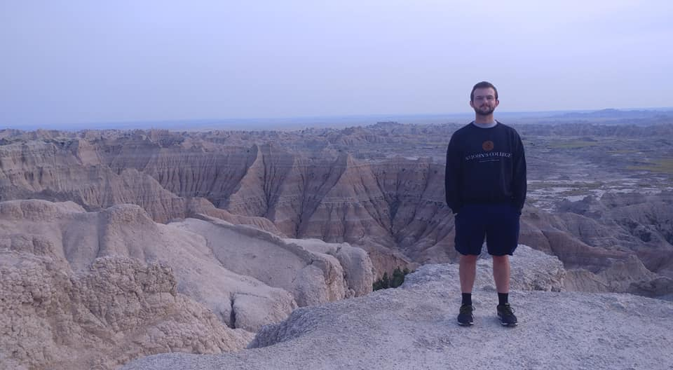

Nathan Dignazio
<first initial><last name>@uchicago.edu

About
I am a master's student at the University of Chicago studying computational analysis and public policy. I hope to use my skills and training to work toward meaningful, collaborative, human-centered insights from data in the public or nonprofit sector.
Previously, I completed an internship at the Cook County Assessor's Office helping rebuild the county's residential valuation model and spent a year serving with AmeriCorps VISTA at an environmental jobs nonprofit.
My bachelor's degree is from St. John's College, Annapolis, where I studied philosophy and the history of math and science.
I enjoy hiking, road trips, and trying to read too many things at once.